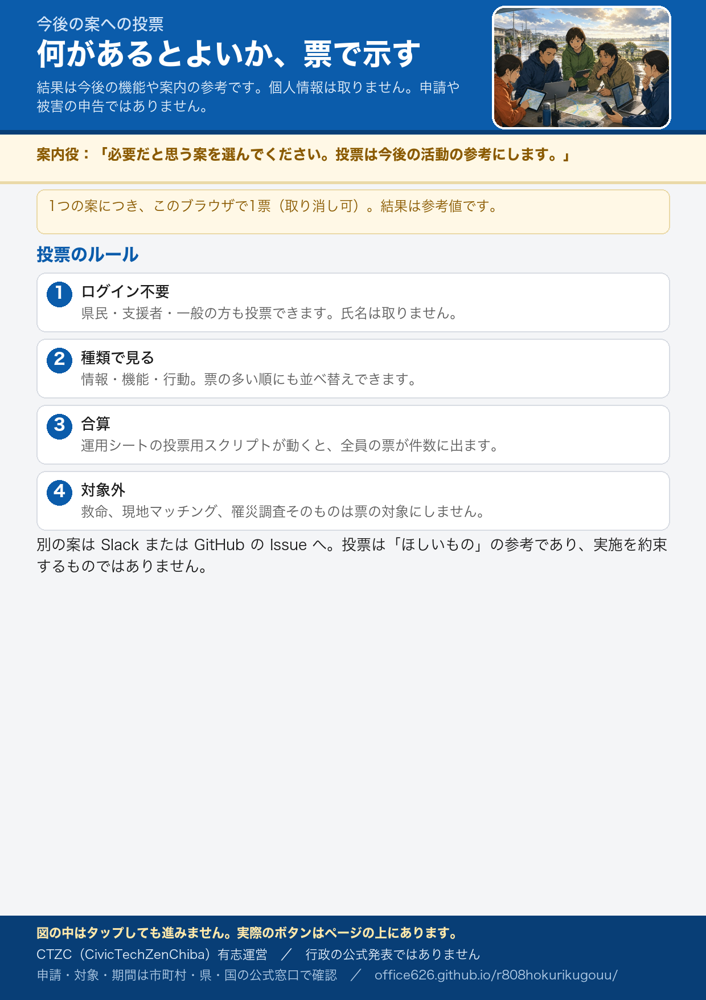

被災後にあるとよいこと（投票）
案は今後の機能追加や新しいサービスの参考にします。個人情報は取りません。申請・被害の申告は公式窓口へ。
表示できる案がありません。
票の扱い
- ログインは不要です。県民・支援者・一般の方も投票できます。
- 1つの案につき、このブラウザで1票です（取り消し可）。氏名は取りません。
- 運用シートの投票用スクリプトを公開すると、全員の票が合算されて件数に出ます。
- 結果は参考値です。今後サイトに何を足すか、どの案内を先に作るかを決める材料にします。
- 救命・現地マッチング・罹災調査そのものは対象外です。
別の案がある場合は Slack か GitHub の Issue へ。
